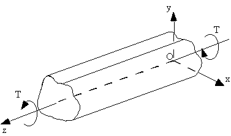
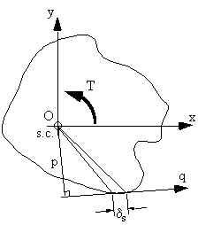
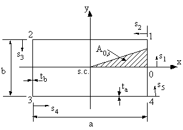
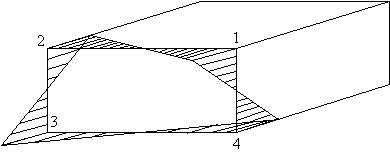
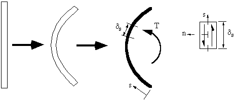
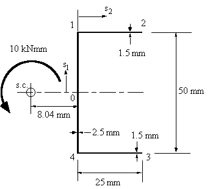
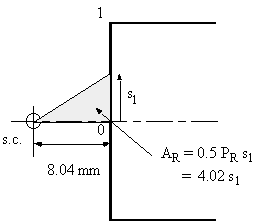
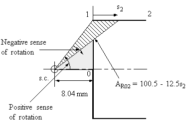
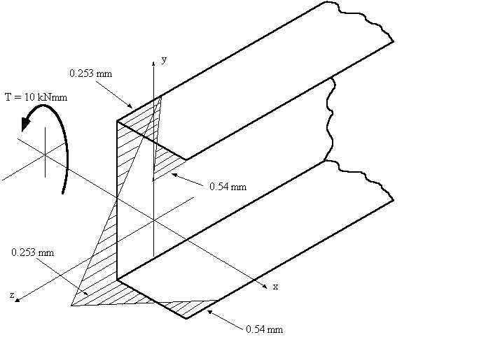

TORSION OF THIN WALLED BEAM SECTIONS
All aircraft structures, particularly wings and fuselages, as well as supporting direct shear loads must support an applied torque. In a fuselage, a torque can be generated by the loads applied to the vertical fin. In a wing a torque can be generated by the resultant pressure distribution acting a distance away from the cross section's shear centre. This section deals with determining the shear flow distribution due to an applied torque.
TORSION OF CLOSED BEAM SECTIONS
A beam with a closed section experiencing only a pure torque T and without any axial constraints, does not develop direct stresses, ie σz = 0.
So shear flow equations become:
$$ {∂q}/{∂s} = {∂q}/{∂z} = 0 $$The only way to satisfy these equations would be if the shear flow 'q' was constant.
NOTE: Although 'q' is constant, the shear stress τ may not be if the wall thickness 't' varied with 's'.
|
 |
|
Figure 45: Closed beam with applied torque. |
To determine the relationship between applied torque and shear flow, apply equilibrium to the end of the beam. In essence the applied Torque T must equal to the torque generated by the shear flow.
Look at the end of beam, and a small section δs.
 |
Figure 46: Equating applied torque with moment generated by shear flow. |
The torque produced by the shear flow on element δs is pqsδs. Integrating about the whole section gives:
$$ T = ∮ pq .ds $$We have previously defined that:
$$ ∮ p.ds = 2A $$Therefore:
$$ q = T/{2A} $$Often referred to as the 'Bredt-Batho Formula'. Substituting this equation into the equation for twist gives the rate of twist due to the Torque 'T':
$$ {dθ}/{dz} = T/{4A^2} ∮ 1/{Gt} .ds $$And substituting this result into shear flow equations, the equation for the warping distribution becomes:
$$ w_s = w_0 + {T δ}/{2A}( {δ_{0s}}/δ - {A_{0s}}/A ) $$where:
$$ δ = ∮ 1/{Gt}.ds \text" and " δ_{0s} = ∫_0^s 1/{Gt}.ds $$Example
Determine the rate of twist and warping distribution in the following symmetrical, rectangular section when subjected by counterclockwise torque T. Assume G is constant.
 |
Figure 47: Torsion of rectangular beam section. |
Start with the rate of twist equation:
$$ {d θ}/{dz} = T/{4A^2G} ∮ 1/t .ds $$Now:
$$ A =ab $$and let:
$$ δ = ∮ 1/t.ds = ∫_0^1 1/{t_b}.ds_1 + ∫_1^2 1/{t_a} .ds_2 + ∫_2^3 1/{t_b}.ds_3 + ∫_3^4 1/{t_a}.ds_4 + ∫_4^0 1/{t_b}.ds_5 = 2 ( b/{t_b} + a/{t_a}) $$Giving that the rate of twist is:
$$ {dθ}/{dz} = T/{2G}( 1/{at_b} + 1/{bt_a} ) $$Looking at the warping equation, but starting from the symmetry line because here w0 = 0 then:
$$ w_s = {Tδ}/{2AG} ( {δ_{0s}}/δ - {A_{0s}}/A ) $$δ and A were calculated above, so to determine the warping we need to define δ0s and A0s,where:
$$ δ_{0s} = ∫_0^s 1/t .ds $$From 0 to 1, $0 ≤ s_1 ≤ b/2 $, so:
$$ δ_{0s_1} = ∫_0^{s_1} 1/{t_b} .ds_1 = {s_1}/{t_b} \text" and " A_{0s_1} = {as_1}/4 $$From 1 to 2, $0 ≤ s_2 ≤ a$ , so:
$$ δ_{0s_2} = b/{2t_b} + ∫_0^{s_2} 1/{t_a} .ds_2 = b/{2t_b} + {s_2}/{t_a} \text" and " A_{0s_2} = {ab}/8 + {bs_2}/4 $$and similarly, from 2 to 3, $0 ≤ s_3 ≤ b $, so:
$$ δ_{0s_3} = a/{t_a}+ b/{2t_b} + {s_3}/{t_b} \text" and " A_{0s_3} = {3ab}/8 + {as_3}/4 $$and from 3 to 4, $0 ≤ s_4 ≤ b$, so:
$$ δ_{0s_4} = a/{t_a}+ {3b}/{2t_b} + {s_4}/{t_a} \text" and " A_{0s_4} = {5ab}/8 + {bs_4}/4 $$All of which gives a linear equation for the warping on all four sides of the section. Meaning that we need only look at the corners because here the warping is the greatest.
At 1:
$$ w_1 = T/{8abG} ( b/{t_b} - a/{t_a} ) $$ Because of symmetry you will find that w2 = -w1 = -w3 = w4. |
Figure 48: Warping distribution of closed beam with applied torque. |
Note: a) if b/tb < a/ta the sign of w is reversed
b) if b/tb = a/ta the section has ZERO warping
TORSION OF OPEN BEAM SECTIONS
To do this analysis we need to consider torsion of a thin rectangular strip, which is bent to form the open section.
 |
Figure 49: Open beam section subject to torque. |
This analysis is detailed and complex, for that reason, only the final equations will be given.
The equation for rate of twist is:
$$ {d θ}/{dz} = T/{JG} $$where the second polar moment of area J is given by:
$$ J = Σ {st^3}/3 \text" or " J = 1/3 ∫_{section} t^3 .ds $$The shear stress although constant over the section's length, varies linearly through the thickness of the section and is given by:
$$ τ_{sδ} = {2n}/J T $$with the maximum shear stress occurring at n = ±½t to give:
$$ τ_{sδ_{max}} = ± {tT}/J $$From this definition for shear stress we can now develop the equation for warping.
Note:Because shear stress is not constant through thickness, warping will be present across the thickness. This is much less than the warping of the centre line of the section and is ignored in aircraft structural analysis.
The shear strain is given by equation:
$$ γ = {∂w}/{∂s} + {∂v_t}/{∂z} $$Shifting the axis of the beam to coincide with the shear centre,
$$ {∂v_t}/{∂z} = p_R {dθ}/{dz} $$Shear stress is given by:
$$ τ = γG $$Combining these 3 equations give:
$$ τ_{zs} = G ( {∂w}/{∂s} + p_R {dθ}/{dz} ) $$At the centre line of the section, n = 0 and $ τ_{zs} = 0$ , giving:
$$ {∂w}/{∂s} = - p_R {dθ}/{dz} $$Integrating w.r.t. 's' gives:
$$ w_s = - {dθ}/{dz} ∫_0^s p_R .ds = - 2 A_R T/{JG} $$where:
$$ A_R = 1/2 ∫_0^s P_R .ds $$and AR is the area swept out by a generator, about the shear centre, from the point of zero warping.
Note :AR is positive if movement of PR along the tangent to the surface in the direction of 's' leads to a counterclockwise rotation of PR about the shear centre.
Example
Determine the maximum shear stress τmax, the rate of twist and the warping for the open beam channel section of Figure 50 when a torque of magnitude T = 10 Nm is applied at the shear centre. Assume the material shear modulus to be and G = 25 GPa.|
 |
|
Figure 50: Open beam with applied torque of 10 kNmm. |
a) Determining sectional property
$$ J = Σ {st^3}/3 = 1/3 ( 2 × 25 × 1.5^3 + 50 × 2.5^3 ) = 316.67 mm^4 $$b) Determining maximum shear stress
$$ τ_{max} = ± {t_{max} T}/J = ± {2.5 × 10,000}/{316.67} = ± 78.95 MPa $$c) Determining rate of twist
$$ {dθ}/{dz} = T/{JG} = {10,000}/{316.67 × 25,000 } = 1.26 × 10^{-3} \text"rad/mm" = 72 \text" Deg/m" $$d) Determining the sections warping
$$w_s = - 2 {dθ}/{dz} A_R $$where:
$$ A_R = 1/2 ∫_0^s p_R .ds $$Because the section is symmetrical, at 0, s1 = 0, w = 0. Therefore, between 0 and 1:
|
 |
|
Figure 51: Diagram showing the derivation of AR |
so the warping equation is linearly varying between 0 and 1, and is:
$$ w_{01} = -2 × 1.26×10^{-3} × 4.02 s_1 = -0.0101 s_1 $$ at s1 = 25 mm, point 1 : w1 = -0.253 mmBetween 1 and 2
 |
Figure 52: Diagram indicating the construction of AR02. |
so
$$ w_{12} = -0.125 + 0.315 s_2 $$ $$ \text "at s2 = 25 mm, w2 = 0.5345 mm " $$As the section is symmetrical, warping on the lower section will be the reverse of this.
The warping distribution looks like this:
|
 |
|
Figure 53: Warping distribution for channel section with 10 kNmm torque. |
Note : If the section is unsymmetrical and you don't know where ws = 0, use the following equation.
$$ A_R = A_{R0} - A_R^l $$where:
AR0 = Swept area by generator rotating about the shear centre from some convenient origin and
$$ A_R^l = 1/2 { ∫_{section} 2 A_{R0} t .ds } /{ ∫_{section} t.ds } $$where :
$$ ∫_{section} = \text "Integral over the entire perimeter of the section " $$